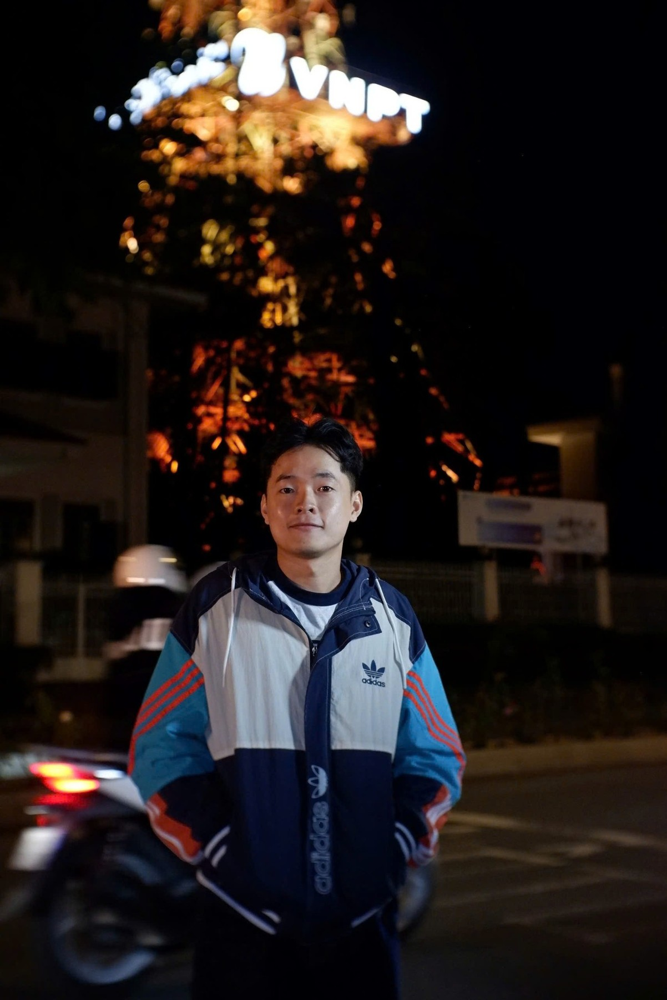
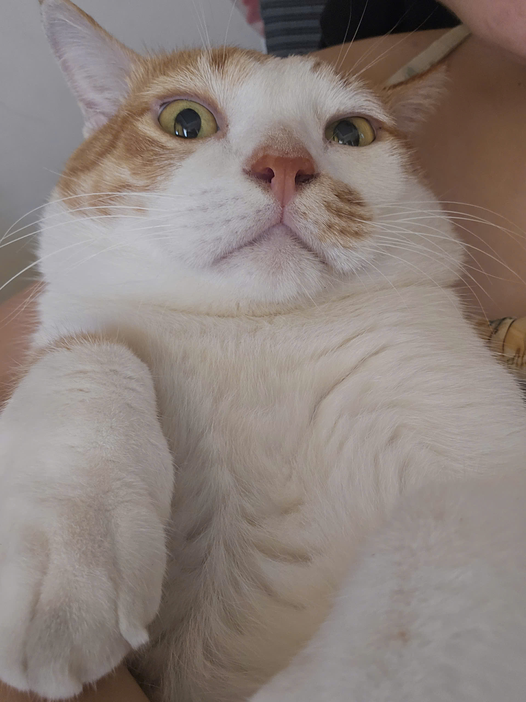
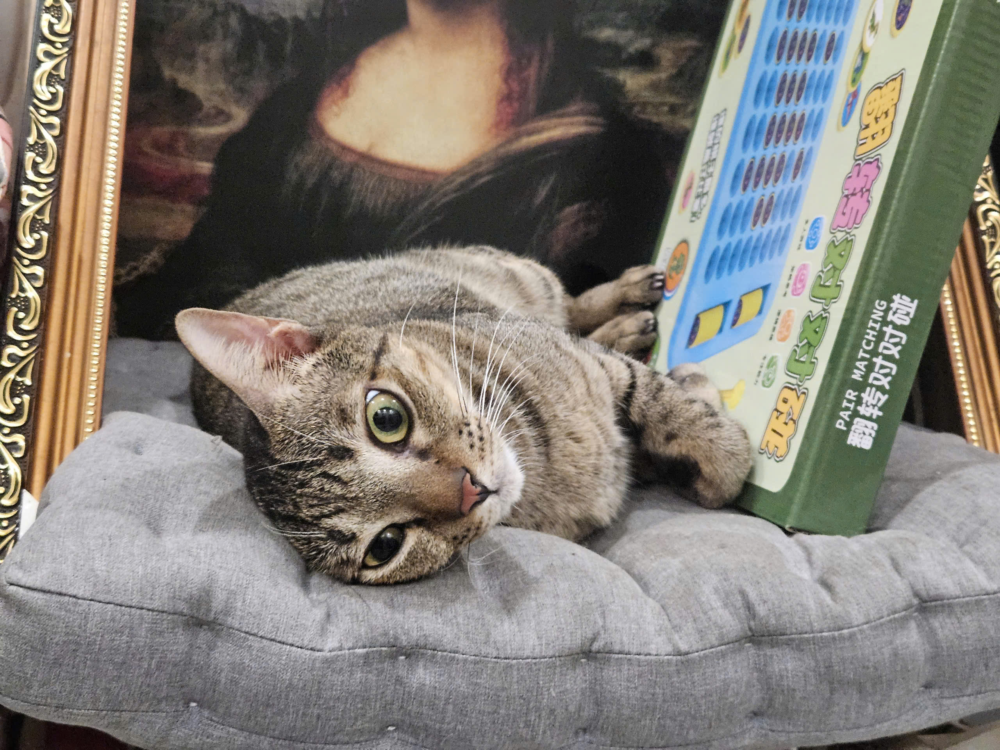
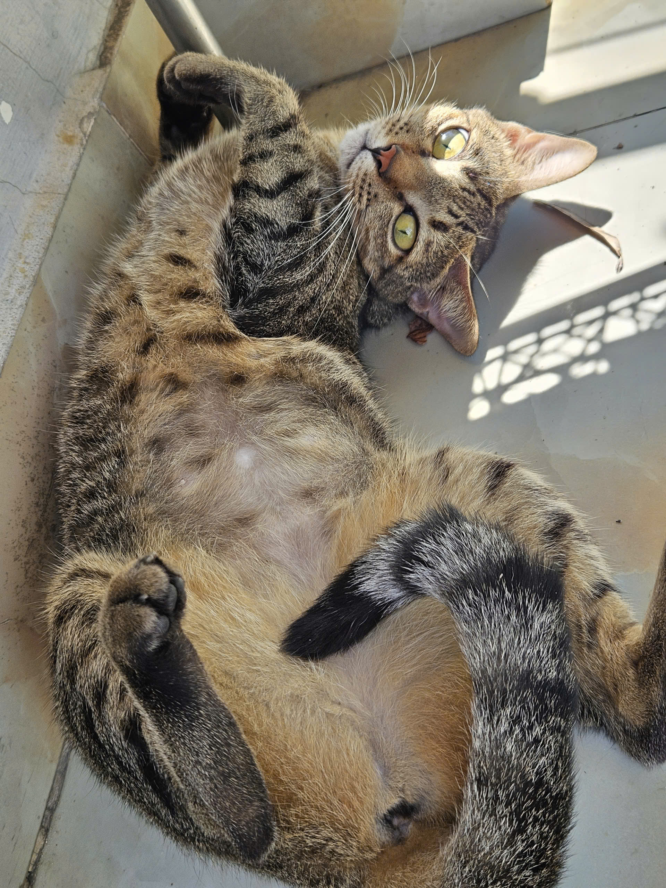
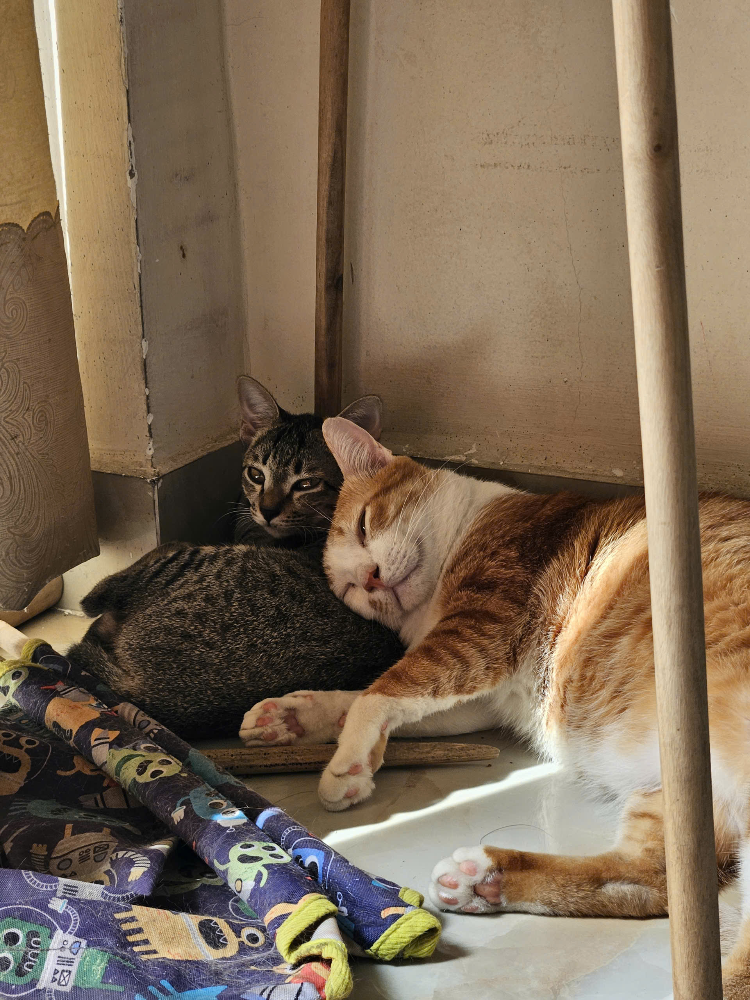
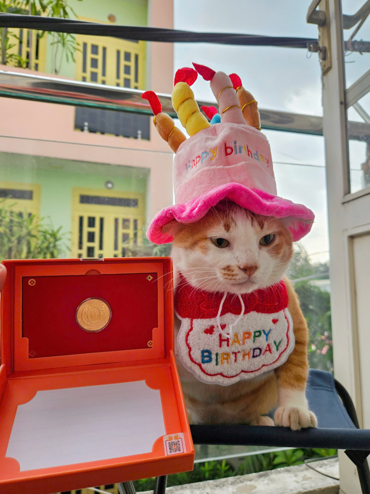

PAGE 01 · THE LITTLE MOMENTS▶01
MEMORY NOTE 01
Một khoảnh khắc đang chuyển động
Có những điều chỉ khi xem lại, mình mới nhận ra chúng đáng nhớ đến nhường nào.
Có một cánh cửa nhỏ đang chờ được mở. Nhập mật mã của chúng mình để bắt đầu chuyến phiêu lưu tuổi 28 nhé.
MADE WITH LOVE · FOR ONE VERY SPECIAL PERSON
NGÀY PHÁT HÀNH · 04.11.2026
MỘT BẢN CẬP NHẬT RẤT ĐẶC BIỆT
Hôm nay hệ thống chính thức phát hành phiên bản tuổi 28 — nhiều trải nghiệm hơn, thêm vài tính năng đáng yêu, và vẫn còn một vài lỗi nhỏ… đáng yêu khó sửa. 😌

Đi qua từng tọa độ kỷ niệm. Mỗi điểm đến mở ra một mảnh ghép của câu chuyện hôm nay.
Mong tuổi mới có thêm nhiều điều đáng mong chờ — và thật nhiều ngày bình thường nhưng vui.
Chúc mừng sinh nhật Lê Tuấn Doãn Tú. Chúc Bin luôn khỏe mạnh, làm được những điều mình ấp ủ, có thêm nhiều chuyến đi hay ho và gặp thật nhiều điều tử tế. Mong công việc bớt căng, những lần phát hành đều suôn sẻ, deadline dễ thở hơn một chút — và lúc nào cũng có lý do để cười.
67 mảnh ký ức được cất thành từng vùng nhỏ. Chọn một tọa độ để ghé thăm, rồi thong thả xem lại nhé.
A FEW MOMENTS, KEPT FOREVER
Có những khoảnh khắc mình chẳng kịp chuẩn bị máy ảnh. Chỉ đơn giản là ở đó, vui vẻ bên nhau — rồi vô tình lưu lại được một đoạn ký ức thật đẹp.
Có những điều chỉ khi xem lại, mình mới nhận ra chúng đáng nhớ đến nhường nào.
Một chút ngẫu nhiên, một chút đáng yêu, và rất nhiều điều thân quen.
Không cần hoàn hảo. Chỉ cần là những khoảnh khắc rất thật của chúng ta.
Gửi anh một đoạn phim nhỏ — để sau này mình vẫn có thể cùng nhau xem lại.
Bo & Lựu phụ trách QA đời sống. Còn Network Ops là ca trực đặc biệt dành cho người hiểu hạ tầng — chọn cách xử lý, đọc dấu hiệu và tìm đúng nguyên nhân.
Năm tình huống lấy từ thói quen thật của Bo và Lựu. Trả lời đúng để nhận dấu paw-approved; sai thì hội đồng cho thử lại.
Bốn tình huống triển khai hạ tầng thực tế: chia subnet cho nhà hàng, cấu hình VLAN cho AP/switch, xử lý DHCP tại nhà máy và kiểm tra routing/ACL tới server. Đọc sơ đồ và triệu chứng, chọn bước kiểm tra hợp lý nhất nhé.
Bo & Lựu đã duyệt. Bốn tình huống triển khai mạng cũng được xử lý. Đồng đội cấp 28 chính thức qua vòng kiểm định!
Gặp hai vị giám khảo ↓Hồ sơ được xác minh bằng ảnh thật từ kho lưu niệm. Không nhận nhầm boss nha!
Đây mới là Bo — bạn mèo vàng đầu tiên của nhà mình. Hôm nay Bo có nhiệm vụ đặc biệt: tham gia hội đồng giám khảo và giám sát nhiệm vụ bí mật.
Chức vụ: Tổng quản kho bánh và người giữ chìa khóa bí mật.


Còn đây là Lựu — đúng bạn mèo mướp nằm trên chiếc đệm xám. Nhìn hiền vậy thôi chứ độ tinh nghịch thì khỏi cần kiểm tra.
Chức vụ: Trưởng ban bày trò, phá giấc ngủ và tạo meme.




Ảnh Bo đã được chia thành 9 mảnh. Mỗi mảnh đang bị xoay lệch một chút — nhấn vào mảnh để xoay 90° theo chiều kim đồng hồ. Quan sát các đường nối và màu sắc để đưa cả bức ảnh về đúng chiều nhé!
Mảnh đúng chiều: 0 / 9 · Số lượt xoay: 0
GOLD SOLVER · 0 lượt xoay
Bo đã trở lại đúng chiều. Boss gửi một cái nheo mắt cảm ơn con sen! 🐾
Bức ảnh đã được khôi phục. Ký ức đã mở, nhưng kho báu vàng vẫn được niêm phong đến tận cuối hành trình.
CÒN MỘT ĐIỀU NỮA
Mọi manh mối đã được thu thập. Nhập mật mã cuối cùng để mở rương kho báu nhé.
Gợi ý đầu tiên: Hai chữ anh hay buột miệng gọi nghe vừa thân quen vừa… tròn trịa. 😼
Chúc mừng sinh nhật anh. Mong tuổi 28 sẽ dịu dàng với anh hơn một chút, mang đến nhiều cơ hội tốt, nhiều tiếng cười và thật nhiều ngày mà anh cảm thấy mình đang sống đúng điều mình muốn.
Cảm ơn anh vì đã xuất hiện trong những bức ảnh, những chuyến đi và cả những khoảnh khắc rất bình thường. Mong rằng sau này album ảnh vẫn còn nhiều thứ để lưu, và tụi mình vẫn còn nhiều chuyện để cười cùng nhau.
Thương anh,
người luôn đứng về phe anh ♡
BIÊN BẢN QUAN TRỌNG · KHÔNG ĐƯỢC THẤT LẠC
Trao tặng anh Tú danh hiệu:
Đặc quyền đi kèm: được ngắm mèo, được mèo làm phiền lúc ngủ, và có trách nhiệm mở đồ ăn đúng giờ.
Mong tuổi 28 của anh sẽ có thật nhiều niềm vui, những chuyến đi đáng nhớ và những ngày bình yên. Cảm ơn anh vì đã đi đến tận dòng cuối cùng của món quà này. Hẹn anh ở những kỷ niệm tiếp theo nhé. ❤️
Bo & Lựu xin phép đi ăn bánh tiếp đây. Bye bye! 🐾BẠN ĐÃ ĐI ĐẾN CUỐI HÀNH TRÌNH
Kho báu bí mật dành riêng cho anh. Cảm ơn anh đã cùng tui đi hết chuyến phiêu lưu này. ♡
